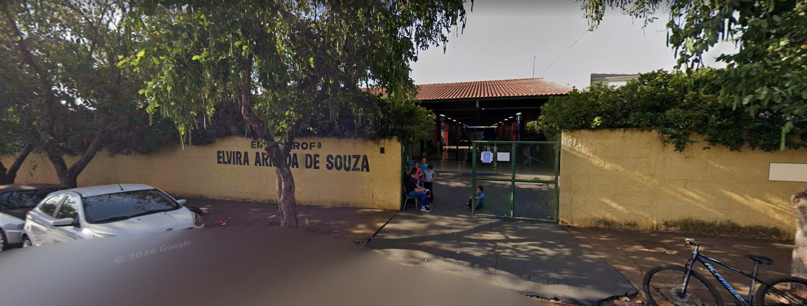
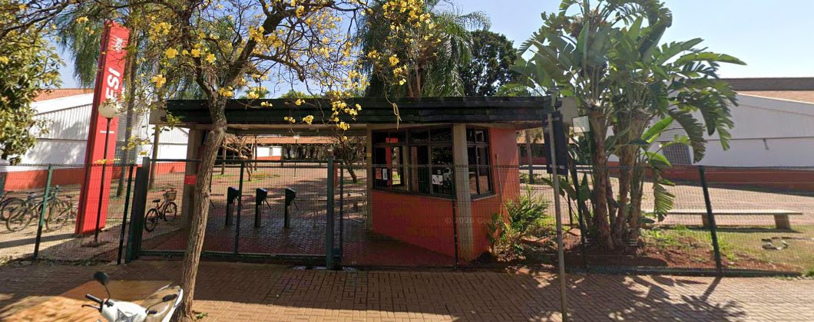
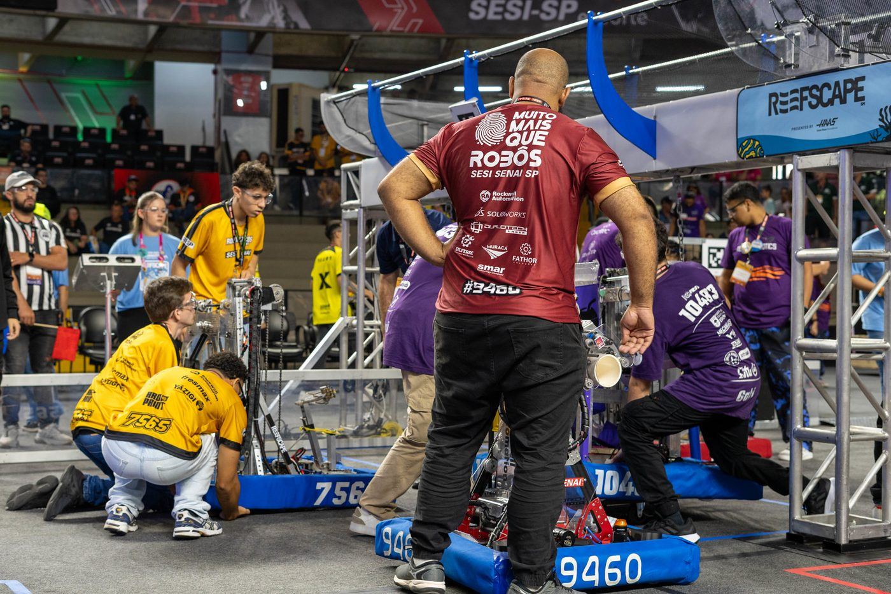

CASO Nº 01
Qual foi o primeiro dia do SESI em Sertãozinho?
Há pistas de cursos em 1955 e 1962, mas ainda não há documento que mostre a data exata.
A história que o SESI construiu em Sertãozinho: dos cursos de corte e costura dos anos 1950 à equipe de robótica que disputa campeonatos internacionais. Uma linha do tempo feita pela turma para os 80 anos do SESI.
Os 80 anos são do SESI nacional, criado em 1946. A unidade de Sertãozinho tem uma história própria, com pistas de cursos desde 1955 e autorização oficial da escola em 1964. Nesta página, cada fato traz um selo que mostra de onde a informação veio.
A história do SESI no Brasil, de Sertãozinho e do SESI na nossa cidade, lado a lado. Clique nos anos ou use as setas.
Use ← → para avançar · F para tela cheia · Esc para sair
Cursos e ferramentas que já foram o padrão e o que ocupa o lugar deles hoje. Os exemplos de Sertãozinho vêm dos registros da nossa unidade.
A escola nem sempre esteve no mesmo lugar. Documentos oficiais mostram um endereço anterior ao atual.

O Parecer CEE nº 1.846/80 identifica o Centro Educacional SESI nº 241 nesse endereço, com cursos de 1º grau. Em 1995, a Escola Estadual Jardim Alvorada começou a funcionar no prédio onde antes ficava a Escola SESI. Hoje ali é a EMEF Professora Elvira Arruda de Souza.

Sede atual da Escola SESI-SP de Sertãozinho e do Centro de Atividades, com academia, balneário, quadras, quiosques e pista de caminhada.
Ainda não se sabe quando o CAT recebeu o nome dele.
As histórias mais bem documentadas do SESI em Sertãozinho.
A parceria entre SESI e Prefeitura juntava a estrutura e o método do SESI, professores e transporte da cidade e o apoio de empresas como Caldema, Fertron, Fundição Água Vermelha e Irmãos Tonielo.
São números de tipos diferentes. Não dá para somar.

Perguntas que a pesquisa on-line ainda não respondeu. Elas podem virar a próxima missão da turma.
Há pistas de cursos em 1955 e 1962, mas ainda não há documento que mostre a data exata.
Sabemos que o prédio antigo virou outra escola em 1995. O ano da mudança ainda é um mistério.
Uma tese da USP cita os cursos de 1955. Falta achar o registro original e as pessoas que estudaram lá.
O convênio de 1992 com a Prefeitura ainda não foi encontrado completo, nem a história do terreno.
O parecer de 1980 fala só de 1º grau. A data de chegada do Ensino Médio ainda não apareceu.
Não há totais públicos de matrículas, formandos e conquistas da unidade.
Livros de matrícula antigos, atas, fotos, placas de inauguração e registros da mudança de endereço.
Convênio de 1992, documentos do terreno, obras e parcerias.
Jornais antigos como O Monitor (1937–1984), O Sertanezino (1961–1963) e Momento Atual (1989–1999).
(16) 3945-9363O SESI vai fazer 160 anos. O que a gente quer que exista até lá na escola e em Sertãozinho? Escreva um desejo e cole no mural.
Algumas fotos são ilustrativas: vêm de outras unidades do SESI ou de outras cidades e foram usadas para representar a época de cada marco. As imagens de 1945 e de 2106 foram criadas com inteligência artificial.
Os selos mostram o grau de certeza de cada fato. Uma notícia no portal do SESI Sertãozinho nem sempre fala de alunos daqui, porque o site reproduz notícias de toda a rede SESI-SP. Por isso entraram aqui só fatos com ligação clara com a cidade.